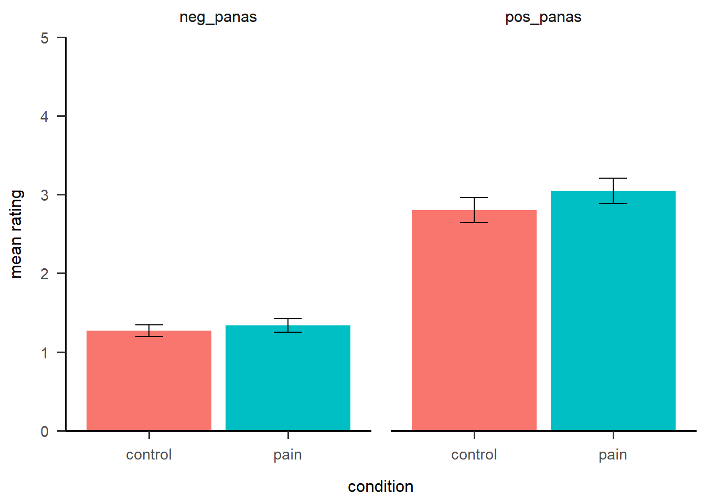
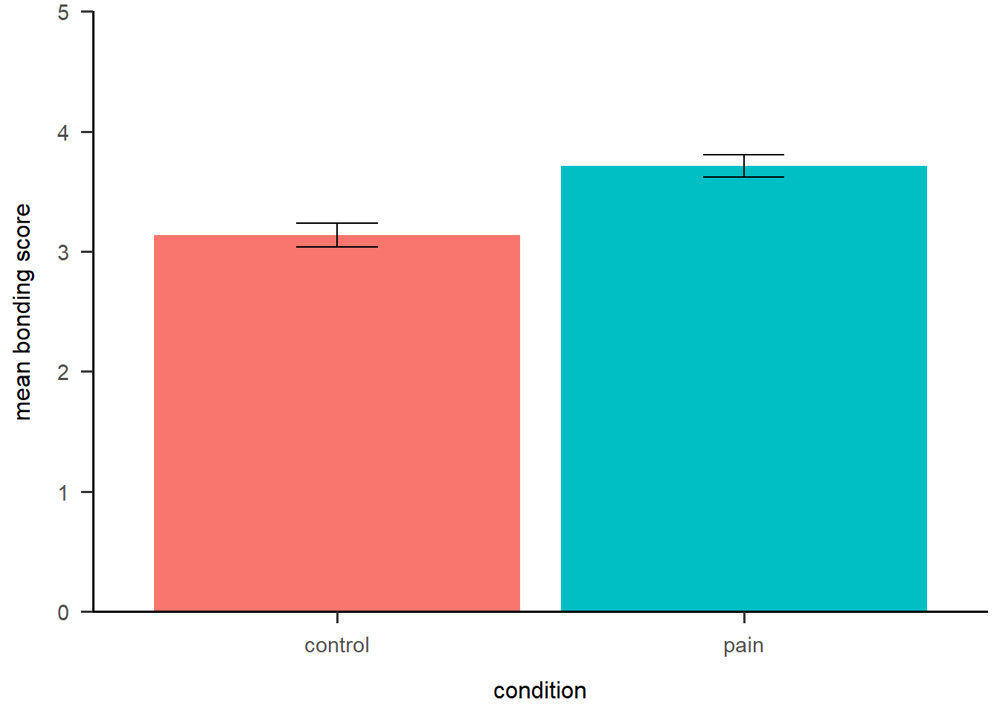

Coding exercise 4
Jen Richmond
02/10/2020
Last updated: 2020-10-10
Checks: 7 0
Knit directory: sakiko_project/
This reproducible R Markdown analysis was created with workflowr (version 1.6.2). The Checks tab describes the reproducibility checks that were applied when the results were created. The Past versions tab lists the development history.
Great! Since the R Markdown file has been committed to the Git repository, you know the exact version of the code that produced these results.
Great job! The global environment was empty. Objects defined in the global environment can affect the analysis in your R Markdown file in unknown ways. For reproduciblity it’s best to always run the code in an empty environment.
The command set.seed(20200910) was run prior to running the code in the R Markdown file. Setting a seed ensures that any results that rely on randomness, e.g. subsampling or permutations, are reproducible.
Great job! Recording the operating system, R version, and package versions is critical for reproducibility.
Nice! There were no cached chunks for this analysis, so you can be confident that you successfully produced the results during this run.
Great job! Using relative paths to the files within your workflowr project makes it easier to run your code on other machines.
Great! You are using Git for version control. Tracking code development and connecting the code version to the results is critical for reproducibility.
The results in this page were generated with repository version a05cf7f. See the Past versions tab to see a history of the changes made to the R Markdown and HTML files.
Note that you need to be careful to ensure that all relevant files for the analysis have been committed to Git prior to generating the results (you can use wflow_publish or wflow_git_commit). workflowr only checks the R Markdown file, but you know if there are other scripts or data files that it depends on. Below is the status of the Git repository when the results were generated:
Ignored files:
Ignored: .Rhistory
Ignored: .Rproj.user/
Note that any generated files, e.g. HTML, png, CSS, etc., are not included in this status report because it is ok for generated content to have uncommitted changes.
These are the previous versions of the repository in which changes were made to the R Markdown (analysis/coding4.Rmd) and HTML (docs/coding4.html) files. If you’ve configured a remote Git repository (see ?wflow_git_remote), click on the hyperlinks in the table below to view the files as they were in that past version.
| File | Version | Author | Date | Message |
|---|---|---|---|---|
| Rmd | a05cf7f | Sakiko Okayama | 2020-10-10 | week 3 and 4 complete |
| Rmd | 40ebea5 | Your Name | 2020-10-02 | add coding4 |
| html | 40ebea5 | Your Name | 2020-10-02 | add coding4 |
In this coding exercise, you will work with data from a study published in Psychological Science.
Bastian, B., Jetten, J., & Ferris, L. F. (2014). Pain as social glue: Shared pain increases cooperation. Psychological Science, 25, 2079-2085.
load packages
library(tidyverse)
library(here)
library(janitor)
library(ggeasy)
library(ggbeeswarm)
library(RColorBrewer)
library(papaja)read in the data
bastian <- read_csv(here("data", "4_Bastian2014.csv"))In this experiment, participants were randomly assigned to the pain condition or the no pain condition. After completing painful (cold pressor, wall squat) or non painful tasks (getting balls or of a container), they completed a number of measures of cooperation and trust.
The measures included… - positive and negative affect - challenge and thread response - rating level of bonding (7 difereent tems) with other participants on 7 point scales
The manipulation checks included assessing the intensity and unpleasantness of the painful vs nonpainful tasks.
familiarise yourself with the data
Use glimpse() or names() or str() to get an idea what is included in the dataset
glimpse(bastian)Rows: 54
Columns: 63
$ subid <dbl> 6.1, 6.2, 6.3, 7.1, 7.2, 7.4, 7.5, 8.1, 8.2, 8....
$ CONDITION <dbl> 0, 0, 0, 0, 0, 0, 0, 0, 0, 0, 0, 0, 0, 0, 0, 0,...
$ groupnumber <dbl> 6, 6, 6, 7, 7, 7, 7, 8, 8, 8, 8, 10, 10, 14, 14...
$ groupsize <dbl> 3, 3, 3, 5, 5, 5, 5, 4, 4, 4, 4, 2, 2, 3, 3, 2,...
$ subnumber <dbl> 1, 2, 3, 1, 2, 4, 5, 1, 2, 3, 4, 1, 2, 1, 2, 1,...
$ subage <dbl> 20, 25, 22, 23, 26, 26, 23, 20, 24, 21, 22, 22,...
$ subgender <dbl> 1, 2, 1, 1, 1, 2, 2, 2, 2, 2, 2, 2, 2, 2, 2, 1,...
$ gendercoded <dbl> 0, 0, 0, 0, 0, 1, 1, 0, 0, 1, 1, 0, 1, 0, 0, 1,...
$ subbornaus <dbl> 0, 0, 0, 0, 0, 1, 1, 0, 0, 0, 0, 0, 1, 0, 0, 0,...
$ subbornloc <chr> "Vietnam", "Brunei", "Malaysia", "Malaysia", "S...
$ subausyears <dbl> 2.00, 2.00, 2.50, 1.50, 4.00, NA, NA, 0.30, 4.0...
$ subefl <dbl> 0, 1, 1, 1, 1, 1, 1, 0, 1, 1, 0, 1, 1, 1, 1, 1,...
$ pain1secs <dbl> 90, 90, 90, 90, 90, 90, 90, 90, 90, 90, 90, 90,...
$ pain2secs <dbl> 90, 90, 90, 90, 90, 90, 90, 90, 90, 90, 90, 90,...
$ feel_interested <dbl> 4, 4, 3, 4, 4, 3, 4, 4, 3, 3, 2, 4, 4, 4, 2, 2,...
$ feel_distressed <dbl> 1, 5, 2, 1, 2, 1, 1, 1, 1, 4, 1, 1, 1, 4, 1, 1,...
$ feel_excited <dbl> 4, 4, 2, 4, 5, 2, 2, 2, 3, 3, 1, 3, 1, 4, 2, 1,...
$ feel_upset <dbl> 1, 1, 1, 1, 1, 1, 1, 1, 1, 1, 1, 1, 1, 1, 1, 1,...
$ feel_strong <dbl> 2, 5, 3, 5, 3, 2, 2, 3, 2, 3, 2, 2, 1, 3, 1, 2,...
$ feel_guilty <dbl> 1, 1, 2, 1, 2, 1, 1, 1, 1, 1, 1, 1, 2, 1, 1, 1,...
$ feel_scared <dbl> 1, 1, 2, 1, 2, 1, 1, 1, 1, 1, 1, 1, 2, 1, 1, 1,...
$ feel_hostile <dbl> 1, 1, 1, 1, 4, 1, 1, 1, 1, 1, 1, 2, 1, 2, 1, 1,...
$ feel_enthusiastic <dbl> 2, 4, 2, 4, 5, 3, 2, 3, 3, 3, 1, 3, 2, 3, 2, 2,...
$ feel_proud <dbl> 3, 4, 2, 4, 5, 2, 2, 2, 3, 2, 1, 2, 1, 2, 1, 2,...
$ feel_irritable <dbl> 1, 2, 2, 1, 1, 1, 1, 1, 1, 4, 1, 1, 1, 2, 1, 1,...
$ feel_alert <dbl> 1, 5, 2, 5, 4, 3, 4, 4, 2, 4, 2, 3, 3, 4, 3, 4,...
$ feel_ashamed <dbl> 1, 1, 1, 1, 3, 1, 1, 1, 2, 1, 1, 1, 3, 1, 1, 1,...
$ feel_inspired <dbl> 2, 4, 2, 2, 5, 1, 3, 1, 2, 2, 1, 2, 1, 2, 1, 1,...
$ feel_nervous <dbl> 1, 1, 2, 1, 2, 1, 2, 1, 2, 1, 1, 1, 2, 2, 1, 2,...
$ feel_determined <dbl> 1, 3, 2, 5, 4, 2, 2, 3, 3, 4, 2, 2, 3, 3, 1, 3,...
$ feel_attentive <dbl> 2, 3, 2, 4, 4, 2, 3, 4, 2, 4, 2, 3, 3, 4, 4, 4,...
$ feel_jittery <dbl> 1, 2, 1, 1, 5, 1, 1, 2, 2, 2, 1, 1, 2, 4, 2, 1,...
$ feel_active <dbl> 3, 4, 2, 4, 4, 3, 2, 4, 3, 4, 2, 2, 2, 2, 3, 3,...
$ feel_afraid <dbl> 1, 1, 2, 1, 2, 1, 1, 1, 1, 1, 1, 1, 2, 1, 1, 1,...
$ task_threatening <dbl> 1, 1, 1, 1, 4, 1, 1, 1, 1, 1, 1, 1, 1, 1, 1, 1,...
$ task_fearful <dbl> 1, 1, 1, 1, 3, 1, 1, 1, 1, 1, 1, 1, 1, 1, 1, 1,...
$ task_enjoyable <dbl> 3, 4, 3, 4, 5, 2, 4, 3, 2, 2, 1, 3, 3, 3, 2, 2,...
$ task_worrying <dbl> 1, 4, 1, 2, 2, 1, 1, 1, 1, 1, 1, 1, 1, 1, 2, 1,...
$ task_hostile <dbl> 1, 1, 1, 1, 2, 1, 1, 1, 1, 1, 1, 2, 1, 2, 1, 1,...
$ task_challenging <dbl> 3, 4, 2, 3, 5, 3, 2, 2, 2, 3, 1, 2, 4, 2, 1, 3,...
$ task_stimulating <dbl> 3, 3, 2, 3, 5, 2, 3, 1, 3, 3, 2, 3, 4, 4, 2, 2,...
$ task_exhilarating <dbl> 1, 5, 2, 3, 5, 1, 1, 1, 1, 1, 1, 1, 2, 4, 1, 1,...
$ task_painful <dbl> 1, 1, 1, 1, 2, 1, 1, 1, 2, 2, 1, 1, 1, 2, 1, 2,...
$ task_depressing <dbl> 1, 1, 1, 1, 1, 1, 1, 1, 1, 1, 2, 1, 1, 1, 1, 1,...
$ task_pitiful <dbl> 1, 1, 1, 1, 1, 1, 1, 1, 1, 1, 1, 1, 1, 1, 1, 1,...
$ task_informative <dbl> 1, 4, 1, 1, 4, 1, 2, 1, 1, 2, 1, 1, 1, 1, 2, 1,...
$ task_exciting <dbl> 3, 5, 2, 4, 5, 2, 2, 1, 3, 3, 1, 2, 3, 3, 2, 1,...
$ task_frightening <dbl> 1, 1, 1, 1, 2, 1, 1, 1, 1, 1, 1, 1, 1, 1, 1, 1,...
$ task_terrifying <dbl> 1, 1, 1, 1, 2, 1, 1, 1, 1, 1, 1, 1, 1, 1, 1, 1,...
$ task_intolerable <dbl> 1, 2, 1, 1, 1, 1, 1, 1, 1, 1, 1, 1, 1, 1, 1, 1,...
$ group101 <dbl> 3, 5, 3, 3, 4, 4, 4, 5, 4, 5, 3, 3, 2, 4, 2, 5,...
$ group102 <dbl> 5, 6, 2, 2, 2, 3, 3, 3, 4, 3, 3, 3, 4, 4, 2, 2,...
$ group103 <dbl> 3, 5, 1, 2, 5, 5, 5, 3, 5, 4, 3, 3, 5, 5, 2, 4,...
$ group104 <dbl> 3, 5, 1, 1, 4, 3, 5, 2, 4, 3, 3, 3, 5, 5, 1, 1,...
$ group105 <dbl> 4, 5, 2, 2, 5, 3, 5, 3, 4, 3, 2, 4, 5, 4, 4, 4,...
$ group106 <dbl> 3, 4, 2, 1, 3, 2, 4, 3, 5, 4, 4, 3, 2, 4, 5, 2,...
$ group107 <dbl> 3, 4, 1, 1, 4, 2, 3, 3, 5, 4, 3, 3, 6, 4, 1, 1,...
$ task_intensity <dbl> 1, 1, 1, 2, 3, 3, 1, 1, 2, 2, 1, 1, 1, 2, 2, 2,...
$ task_unpleasantness <dbl> 1, 1, 1, 2, 4, 3, 1, 1, 2, 1, 1, 1, 2, 6, 2, 1,...
$ Threat_MEAN <dbl> 1.000000, 1.500000, 1.000000, 1.166667, 2.50000...
$ Challenge_MEAN <dbl> 2.333333, 4.166667, 2.000000, 3.000000, 4.83333...
$ Pos_PANAS <dbl> 2.4, 4.0, 2.2, 4.1, 4.3, 2.3, 2.6, 3.0, 2.6, 3....
$ Neg_PANAS <dbl> 1.0, 1.6, 1.6, 1.0, 2.4, 1.0, 1.1, 1.1, 1.3, 1....make the variable name formatting consistent
clean_bastian <- bastian %>%
clean_names() %>%
rename(sub_id = subid, group_number = groupnumber, group_size = groupsize, sub_number = subnumber, sub_age = subage, sub_gender = subgender, gender_coded = gendercoded, sub_born_aus = subbornaus, sub_born_loc = subbornloc, sub_aus_years = subausyears, sub_efl = subefl, pain_1_secs = pain1secs, pain_2_secs = pain2secs)make the data problem smaller
There are lots of variables that you wont need. Select just the variables related to participant id, group, PANAS scores, threat and challenge means, ratings of task intensity and pleasantness, and the 7 ratings to group bonding.
select_bastian <- select(clean_bastian, sub_id, condition, pos_panas, neg_panas, threat_mean, challenge_mean, task_intensity, task_unpleasantness, starts_with("group10"))Q1: did the pain manipulation work?
Select just the ppid and condition variables along with those that relate to the manipulation check (unpleasantness and intensity), make them long so you have a single column called rating type (unpleasantness, intensity) and another with ratings.
The condition values are 0 and 1, make them a factor so your plot will display properly.
long_manipulation_check <- select_bastian %>%
select(sub_id, condition,task_intensity, task_unpleasantness)%>%
pivot_longer(names_to = "rating_type", values_to = "ratings", task_unpleasantness:task_intensity) %>%
mutate(condition = as.factor(condition))Get some summary stats by group and plot the intensity and unpleasantness scores separately for participants in the pain vs no pain group
summary_manipulation_check <- long_manipulation_check %>%
group_by(condition, rating_type) %>%
summarise(mean = mean(ratings), sd = sd(ratings), n = n(), stderror = sd/sqrt(n))
summary_manipulation_check %>%
ggplot(aes(x = condition, y = mean, fill = condition)) +
geom_col(position = "dodge") +
facet_wrap(~ rating_type) +
geom_errorbar(aes(x = condition, ymin = mean-stderror, ymax = mean+stderror, width=.2)) +
theme_apa() +
scale_y_continuous(expand = c(0,0))+
easy_remove_legend()
Q2: did the pain manipulation result in group differences in pos and neg affect scores?
Select just ppid, condition and PANAS, make the data long, and plot group differences. Include standard error bars.
long_panas <- select_bastian %>%
select(sub_id, condition, pos_panas, neg_panas) %>%
pivot_longer(names_to = "rating_type", values_to = "ratings", pos_panas:neg_panas) %>%
mutate(condition = as.factor(condition))
summary_panas <- long_panas %>%
group_by(condition, rating_type) %>%
summarise(mean = mean(ratings), sd = sd(ratings), n = n(), stderror = sd/sqrt(n))
summary_panas %>%
ggplot(aes(x = condition, y = mean, fill = condition)) +
geom_col(position = "dodge") +
facet_wrap(~ rating_type) +
geom_errorbar(aes(x = condition, ymin = mean-stderror, ymax = mean+stderror, width=.2)) +
theme_apa() +
scale_y_continuous(expand = c(0,0))+
easy_remove_legend()
Q3: was the pain manipulation more threatening/challenging than the control task?
Select just ppid, condition and threat challenge scores, make the data long, and plot group differences. Include standard error bars.
long_threat_challenge <- select_bastian %>%
select(sub_id, condition, threat_mean, challenge_mean) %>%
pivot_longer(names_to = "rating_type", values_to = "ratings", threat_mean:challenge_mean) %>%
mutate(condition = as.factor(condition))
summary_threat_challenge <- long_threat_challenge %>%
group_by(condition, rating_type) %>%
summarise(mean = mean(ratings), sd = sd(ratings), n = n(), stderror = sd/sqrt(n))
summary_threat_challenge %>%
ggplot(aes(x = condition, y = mean, fill = condition)) +
geom_col(position = "dodge") +
facet_wrap(~ rating_type) +
geom_errorbar(aes(x = condition, ymin = mean-stderror, ymax = mean+stderror, width=.2)) +
theme_apa() +
scale_y_continuous(expand = c(0,0))+
easy_remove_legend()Q4: did the pain manipulation result in differences in group bonding?
Select variables related to ppid, condition, and group ratings. Make the group ratings long, and group_by participant and condition to get a mean rating score across the 7 bonding variables. Plot mean bonding scores as a function of group.
long_bonding <- select_bastian %>%
select(sub_id, condition,starts_with("group10")) %>%
pivot_longer(names_to = "rating_type", values_to = "ratings", group101:group107)%>%
mutate(condition = as.factor(condition))
summary_bonding <- long_bonding %>%
group_by(condition)%>%
summarise(mean = mean(ratings), sd = sd(ratings), n = n(), stderror = sd/sqrt(n))
summary_bonding %>%
ggplot(aes(x = condition, y = mean, fill = condition)) +
geom_col() +
geom_errorbar(aes(x = condition, ymin = mean-stderror, ymax = mean+stderror, width=.2)) +
theme_apa() +
scale_y_continuous(expand = c(0,0))+
easy_remove_legend() +
labs(y = "mean bonding score")
extra challenge
This dataset included all the raw ratings as well as summarised scores for the PANAS and threat/challenge scores. Look up the published paper and see if you can match the variables in the dataset to questionnaire items. Use your wrangling skills to verify that the summary scores for pos and neg and threat/challenge were calculated accurately.
verify pos scores
long_pos <- clean_bastian %>%
select(sub_id, condition, feel_attentive, feel_active, feel_alert, feel_excited, feel_enthusiastic, feel_determined, feel_inspired, feel_proud, feel_interested, feel_strong) %>%
pivot_longer(names_to = "rating_type", values_to = "ratings", feel_attentive:feel_strong)%>%
mutate(condition = as.factor(condition))
summary_pos <- long_pos %>%
group_by(condition)%>%
summarise(mean = mean(ratings), sd = sd(ratings))verify neg scores
long_neg <- clean_bastian %>%
select(sub_id, condition, feel_hostile, feel_irritable, feel_ashamed, feel_guilty, feel_distressed, feel_upset, feel_scared, feel_afraid, feel_jittery, feel_nervous) %>%
pivot_longer(names_to = "rating_type", values_to = "ratings", feel_hostile:feel_nervous)%>%
mutate(condition = as.factor(condition))
summary_neg <- long_neg %>%
group_by(condition)%>%
summarise(mean = mean(ratings), sd = sd(ratings))verify threat scores
long_threat <- clean_bastian %>%
select(sub_id, condition, task_fearful, task_worrying, task_hostile, task_threatening, task_frightening, task_terrifying) %>%
pivot_longer(names_to = "rating_type", values_to = "ratings", task_fearful:task_terrifying) %>% mutate(condition = as.factor(condition))
summary_threat <- long_threat %>%
group_by(condition)%>%
summarise(mean = mean(ratings), sd = sd(ratings))verify challenge scores
long_challenge <- clean_bastian %>%
select(sub_id, condition, task_enjoyable, task_stimulating, task_exciting, task_exhilarating, task_informative, task_challenging) %>%
pivot_longer(names_to = "rating_type", values_to = "ratings", task_enjoyable:task_challenging) %>% mutate(condition = as.factor(condition))
summary_challenge <- long_challenge %>%
group_by(condition)%>%
summarise(mean = mean(ratings), sd = sd(ratings))The mean for condition 0 is incorrectly rounded down here.
sessionInfo()R version 4.0.2 (2020-06-22)
Platform: x86_64-w64-mingw32/x64 (64-bit)
Running under: Windows 10 x64 (build 19041)
Matrix products: default
locale:
[1] LC_COLLATE=English_Australia.1252 LC_CTYPE=English_Australia.1252
[3] LC_MONETARY=English_Australia.1252 LC_NUMERIC=C
[5] LC_TIME=English_Australia.1252
attached base packages:
[1] stats graphics grDevices utils datasets methods base
other attached packages:
[1] papaja_0.1.0.9997 RColorBrewer_1.1-2 ggbeeswarm_0.6.0 ggeasy_0.1.2
[5] janitor_2.0.1 here_0.1 forcats_0.5.0 stringr_1.4.0
[9] dplyr_1.0.2 purrr_0.3.4 readr_1.3.1 tidyr_1.1.1
[13] tibble_3.0.3 ggplot2_3.3.2 tidyverse_1.3.0 workflowr_1.6.2
loaded via a namespace (and not attached):
[1] Rcpp_1.0.5 lubridate_1.7.9 utf8_1.1.4 assertthat_0.2.1
[5] rprojroot_1.3-2 digest_0.6.25 R6_2.4.1 cellranger_1.1.0
[9] backports_1.1.7 reprex_0.3.0 evaluate_0.14 httr_1.4.2
[13] pillar_1.4.6 rlang_0.4.7 readxl_1.3.1 rstudioapi_0.11
[17] whisker_0.4 blob_1.2.1 rmarkdown_2.3 labeling_0.3
[21] munsell_0.5.0 broom_0.7.0.9001 vipor_0.4.5 compiler_4.0.2
[25] httpuv_1.5.4 modelr_0.1.8 xfun_0.16 pkgconfig_2.0.3
[29] htmltools_0.5.0 tidyselect_1.1.0 fansi_0.4.1 crayon_1.3.4
[33] dbplyr_1.4.4 withr_2.2.0 later_1.1.0.1 grid_4.0.2
[37] jsonlite_1.7.0 gtable_0.3.0 lifecycle_0.2.0 DBI_1.1.0
[41] git2r_0.27.1 magrittr_1.5 scales_1.1.1 cli_2.0.2
[45] stringi_1.4.6 farver_2.0.3 fs_1.5.0 promises_1.1.1
[49] snakecase_0.11.0 xml2_1.3.2 ellipsis_0.3.1 generics_0.0.2
[53] vctrs_0.3.2 tools_4.0.2 glue_1.4.1 beeswarm_0.2.3
[57] hms_0.5.3 yaml_2.2.1 colorspace_1.4-1 rvest_0.3.6
[61] knitr_1.29 haven_2.3.1